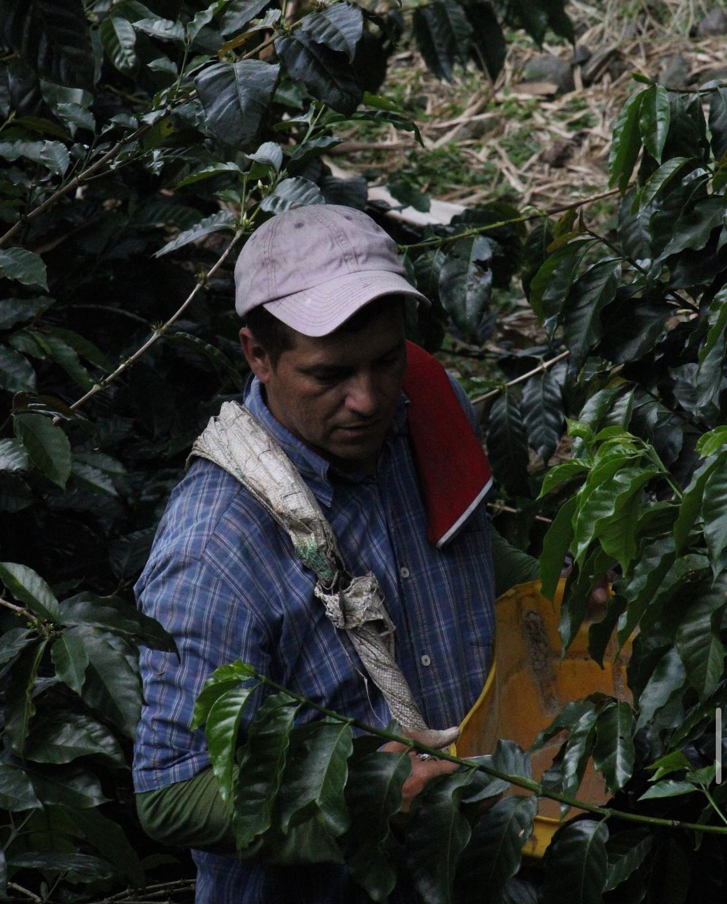
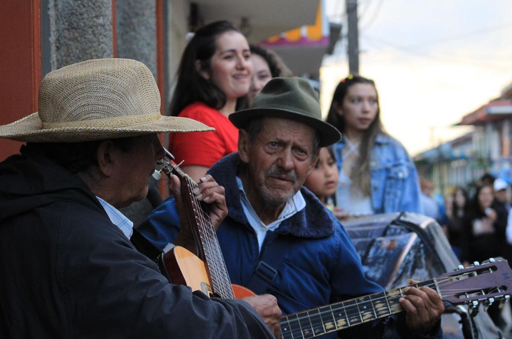
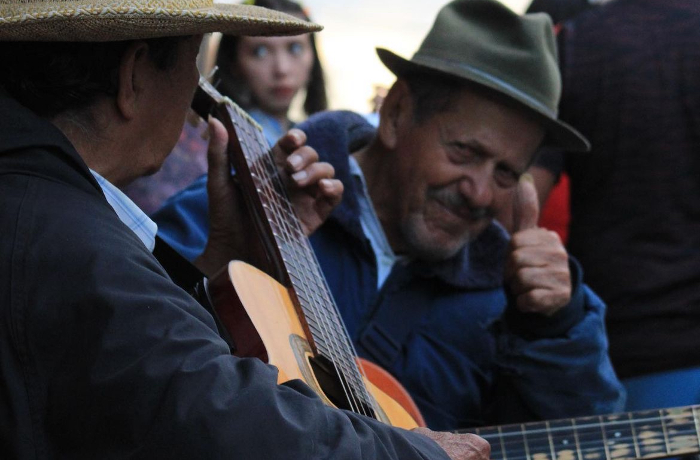
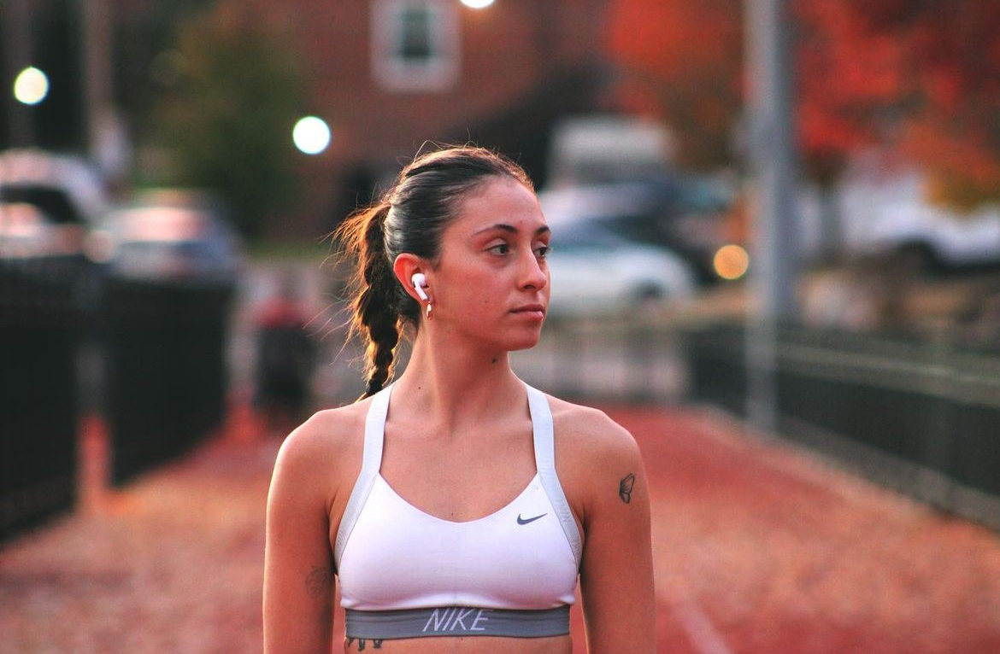
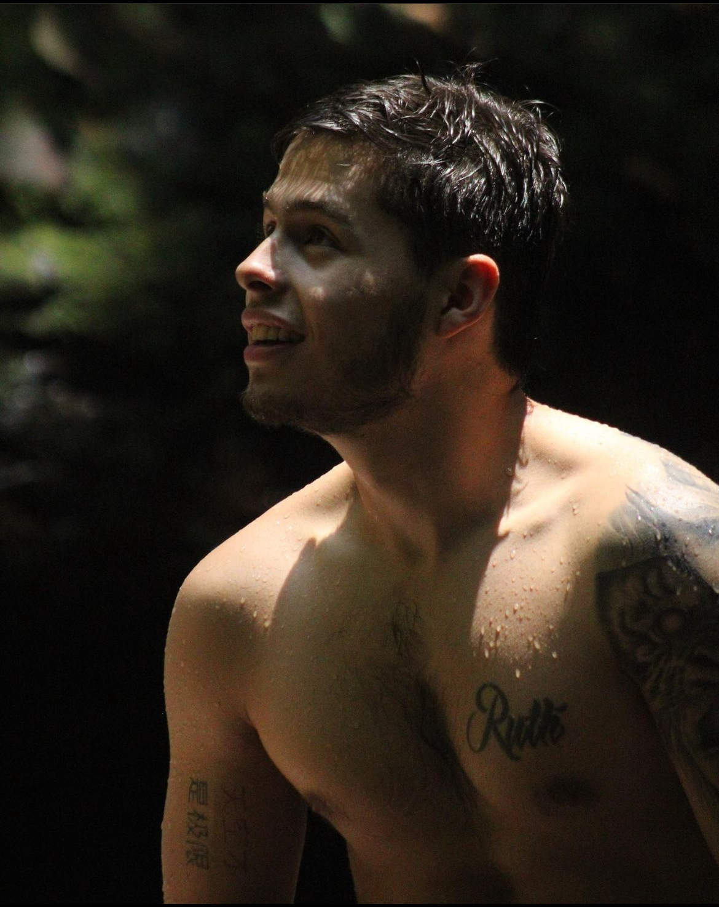
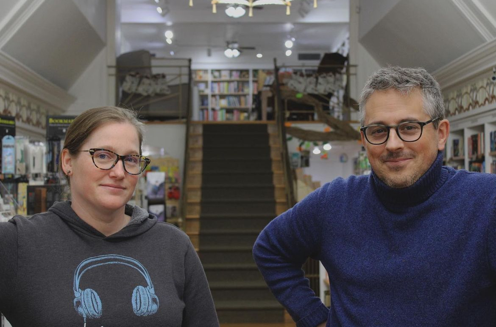

As a seasoned photojournalist driven by a profound fascination with people's narratives, I've curated a collection of what I consider my finest portraits. These images transcend mere visual representation; they encapsulate stories that words alone fail to convey. Within these frames lie poignant memories from the field, each evoking a spectrum of emotions—be it the raw struggle of humanity or the exuberance of sheer joy.
Some of these portraits have graced the pages of publications, while others, equally poignant, have remained hidden in my personal archive. Yet, each holds its own tale, a testament to the depth of human experience.
From moments where I've pushed my equipment to its limits to instances where I've endeavored to capture the essence of beauty, these portraits stand as a testament to the power of the human story, frozen in time by the click of a shutter.
Join me on this visual journey as we explore the myriad facets of life through the lens of my camera.

This portrait captures a moment during my tour of a local farm, located just an hour from Medellin. Amidst the lush greenery of the plantation, I encountered a farmer deeply engaged in the craft of coffee cultivation.

This picture was taken on a trip to a small town in Colombia. In the streets, there were these two artists playing native 'baladas.' The atmosphere around them was great, and the sunset was about to set.

Seeing him give me a thumbs up after noticing me take pictures made these last two moments even more cherished. They were filled with a sense of peace and admiration.

I took this picture with one of my favorite friends since moving to the US. She's a former professional runner who used to compete for Argentina's sprinting team. This photo, along with others, was part of a story I created about her during my sophomore year.

On a hike to one of Colombia's tallest waterfalls, this photo captures the exact moment my friend Juan Pablo, our guide, realizes we're less than 2 minutes away!

This photo, taken for a Missouri Business Alert Magazine project, features Skylark Bookstore in Columbia, MO. The friendly faces are the owner and manager, and I loved the welcoming atmosphere of the store. .